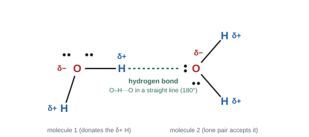
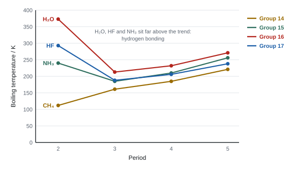

Intermolecular forces
Covalent bonds hold the atoms together inside a molecule. Much weaker forces act between neighbouring molecules, and those forces decide whether a substance is a gas, a liquid or a solid, how hot it must be to boil, and what it will dissolve in. This topic explains the three kinds of intermolecular force, how to tell which ones a substance has, and how to use them to explain real data.
Spec7.1The three types of intermolecular force
Understand the nature of (i) London forces (instantaneous dipole–induced dipole), (ii) permanent dipole–permanent dipole interactions and (iii) hydrogen bonds.
Intermolecular is not intramolecular
- Intramolecular bonds are the covalent bonds inside a molecule. They are strong.
- Intermolecular forces act between separate molecules. They are much weaker (a hydrogen bond is roughly a tenth of a covalent bond, London forces weaker still).
- When a simple molecular substance melts or boils, only the intermolecular forces are overcome. The covalent bonds stay intact: boiling water gives H₂O molecules, not H and O atoms.
(i) London forces
- Electrons in a molecule are always moving. At any instant they may be unevenly spread, giving an instantaneous (temporary) dipole.
- That dipole repels or attracts the electrons of a neighbouring molecule, inducing a dipole in it.
- The δ+ end of one attracts the δ− end of the other. The dipoles keep vanishing and re-forming, but on average there is an attraction.
- London forces act between all molecules (and atoms of noble gases), polar or not.
- They get stronger with more electrons per molecule: more electrons give bigger instantaneous dipoles.
- They are also stronger when molecules have more points of contact (long, straight molecules can lie close along their length).
- Other names: dispersion forces, van der Waals forces, instantaneous dipole–induced dipole forces.
(ii) Permanent dipole–permanent dipole interactions
- A molecule is polar if it contains polar bonds (atoms of different electronegativity) and its shape doesn't cancel them out. HCl, CH₃Cl and propanone are polar; CO₂ and CCl₄ are not (symmetric, so the dipoles cancel).
- The δ+ end of one polar molecule attracts the δ− end of the next. This acts in addition to London forces.
- For molecules with a similar number of electrons, pd–pd forces make the polar one boil higher: propanone (32 electrons, polar) boils at 56 °C; butane (34 electrons, non-polar) at about 0 °C.
(iii) Hydrogen bonds
- A hydrogen bond forms between a δ+ hydrogen that is covalently bonded to N, O or F, and a lone pair on an N, O or F atom of another molecule.
- N, O and F are very electronegative and small, so the N–H, O–H and F–H bonds are very polar, and the hydrogen (with no inner electrons) is a tiny, very exposed δ+ centre.
- The three atoms X–H···Y lie in a straight line (180°), because the lone pair and the bonding pair repel each other as far apart as possible.
- Hydrogen bonds are the strongest intermolecular force, but still much weaker than covalent bonds.
Strength order (for molecules of similar size): hydrogen bonds > permanent dipole–dipole > London forces. But a big molecule's London forces can outweigh a small molecule's hydrogen bonds: I₂ (106 electrons, London only) is a solid, while water is a liquid.
- London forces: "instantaneous / temporary dipole" caused by "an uneven / asymmetrical distribution of electrons", which "induces a dipole" in a neighbouring molecule (WCH12 Oct 2024). ACCEPT van der Waals, dispersion.
- Strength: "(hydrogen iodide has) more electrons". IGNORE "bigger molecule"; DO NOT AWARD with wrong extra reasons such as "more polarising".
- Comparisons must be comparative: "hydrogen bonds are stronger than London forces". "Hydrogen bonding is strong" alone scores nothing (WCH12 Jun 2022).
- Levels answers: "F₂ has only London forces; HCl has pd–pd as well; CH₃OH has hydrogen bonds" (WCH12 Jun 2021). Say "only" where it applies.
- Any mention of breaking covalent bonds on boiling loses the mark.
Often asked as: explain how London forces arise; a 6-mark comparison of boiling or liquefaction temperatures (F₂, HCl, CH₃OH; H₂ and NH₃); which forces are present in a named substance.
Describing the trend in London forces down a group when asked how they arise (WCH12 Oct 2024 examiner report).
Comparing Mr instead of number of electrons (WCH12 Jan 2025 examiner report).
Calling the covalent N–H bond a "hydrogen bond", or putting a hydrogen bond inside one molecule (WCH12 Jan 2022 examiner report).
Forgetting that polar and hydrogen-bonded molecules also have London forces.
Spec7.2Hydrogen bonding in water, ammonia and hydrogen fluoride
Understand the interactions in H₂O, liquid NH₃ and liquid HF that lead to hydrogen bonding.

What each molecule brings
| Molecule | δ+ H atoms (donors) | Lone pairs on N/O/F (acceptors) | Average hydrogen bonds per molecule |
|---|---|---|---|
| H₂O | 2 | 2 (on O) | 2 |
| NH₃ | 3 | 1 (on N) | 1 (limited by the single lone pair) |
| HF | 1 | 3 (on F) | 1 (limited by the single H) |
- Each hydrogen bond needs one δ+ H and one lone pair. Water is the only one of the three with equal numbers (two of each), so it forms the most hydrogen bonds per molecule. That's why water boils highest of the three.
- HF forms the strongest single hydrogen bond, because F is the most electronegative element, so H–F is the most polar bond. In liquid HF the molecules form zig-zag chains, F–H···F–H···F.
- NH₃: N is less electronegative than O or F, so its hydrogen bonds are weaker. In liquid ammonia each N lone pair accepts an H from a neighbouring molecule.
Drawing a hydrogen bond (the marks)
- Draw both molecules with all atoms (no "O₂H").
- Put δ+ on the H and δ− on the O (N, F).
- Show the lone pair on the accepting O, N or F.
- Draw the hydrogen bond as a dotted or dashed line from that lone pair to the H.
- Make O–H···O straight and label it 180°.
- "Hydrogen bond from a lone pair on the oxygen of one molecule to the (δ+) hydrogen of another", "linear O–H···O, labelled 180°", "δ+ on H, δ− on O". The bond must be dotted, not solid (WCH12 Oct 2019).
- Conditions: "H attached to N, O or F" plus "N, O or F with a lone pair".
- HF strongest: "F has the highest electronegativity, so H–F is the most polar bond" (WCH12 Jan 2020).
- Ammonia: "hydrogen bonds from the N lone pair to the δ+ H of a different NH₃ molecule" (WCH12 Jun 2023).
Often asked as: draw a hydrogen bond between two water molecules, two alcohol molecules, or ethanol and water; explain why HF boils higher than HCl.
Examined in past papers even though the spec doesn't list it.
Water forms more hydrogen bonds than NH₃ or HF because it has two lone pairs and two H atoms (a 2 : 1 ratio compared with NH₃'s one lone pair) (WCH12 Jan 2025).
The N–H···N angle in ammonia need not be drawn as exactly 180° (WCH12 Jun 2023).
Missing lone pairs, missing the 180° label, or drawing H–O···H (wrong atoms lined up) (WCH12 Jan 2025 examiner report).
Drawing the hydrogen bond to the δ+ H of a C–H group: C–H is not polar enough.
Spec7.3The anomalous properties of water
Understand how hydrogen bonding explains (i) water's high melting and boiling temperatures compared with similar molecules and (ii) why ice is less dense than liquid water.
(i) High melting and boiling temperatures

- Going down Group 16 from H₂S to H₂Te, boiling temperature rises because the molecules have more electrons, so stronger London forces.
- Extending that trend back, H₂O "should" boil at around −80 °C. It actually boils at 100 °C.
- Water molecules form hydrogen bonds (two per molecule), which are much stronger than the London and pd–pd forces in H₂S. Much more energy is needed to separate the molecules.
- The same reasoning explains why water is a liquid, not a gas, at room temperature, and why its melting temperature (0 °C) is so high for its size.
(ii) Ice is less dense than water
- In ice, every water molecule is hydrogen-bonded to four others in a fixed, tetrahedral arrangement. This makes an open lattice with a lot of empty space between the molecules.
- When ice melts, some hydrogen bonds break. The open structure collapses and the molecules can move closer together, so liquid water is denser (about 1.00 g cm⁻³, compared with about 0.92 g cm⁻³ for ice).
- So ice floats. Ponds freeze from the top down, and the ice layer insulates the water below, so aquatic life survives.
- For almost every other substance, the solid is denser than the liquid.
In ice, every water molecule is hydrogen-bonded to four others, arranged tetrahedrally around it: two bonds through its own hydrogens and two through the lone pairs on its oxygen.
The hydrogen bonds have a fixed length and direction, so they hold the molecules in a rigid, open lattice with a lot of empty space, and the molecules further apart than in liquid water.
When ice melts, some hydrogen bonds break, the open lattice collapses, and the molecules can pack closer together. So the same mass takes up less volume: liquid water is denser than ice.
Ice floating has a big consequence: lakes freeze from the top down, and the ice layer insulates the water below, so aquatic life survives the winter.
Water v ammonia (WCH12 Jan 2025, three marks):
- "similar number of electrons, so London forces are similar"
- "water forms more hydrogen bonds (per molecule) than ammonia"
- "density of water increases as it changes from solid to liquid" because the open hydrogen-bonded structure of ice collapses.
ACCEPT "hydrogen bonds in water are stronger because O is more electronegative than N". IGNORE comments on pd–pd forces.
Often asked as: explain water's boiling temperature compared with H₂S or NH₃; explain the density change on melting.
Quoting Mr; saying ammonia can't hydrogen bond; comparing the density of water with the density of ammonia instead of ice with liquid water (WCH12 Jan 2025 examiner report: half the candidates scored zero).
Saying covalent O–H bonds break when water boils.
Spec7.4Predicting hydrogen bonding in other molecules
Predict whether hydrogen bonding is present in molecules similar to H₂O, NH₃ and HF.
The two-part test
A substance hydrogen-bonds with itself only if its molecules have both:
- an H atom bonded directly to N, O or F (an O–H, N–H or H–F group), and
- a lone pair on an N, O or F atom.
| Molecule | O–H / N–H present? | Hydrogen bonds between its own molecules? |
|---|---|---|
| Alcohols, e.g. CH₃OH, C₂H₅OH | O–H | yes |
| Carboxylic acids, e.g. CH₃COOH | O–H | yes (strongly: they can pair up as dimers) |
| Amines, e.g. CH₃NH₂ | N–H | yes |
| Urea, (NH₂)₂CO | N–H | yes (and pd–pd) |
| Propane-1,2,3-triol (glycerol) | three O–H | yes, three per molecule: very viscous |
| Propanone, CH₃COCH₃ | no (only C–H) | no: pd–pd and London only |
| Ethers, aldehydes, esters | no | no with themselves |
| Halogenoalkanes, e.g. CH₃Cl | no | no: pd–pd and London |
| HCl, HBr, HI | H–X, but X is not N, O or F | no |
- Molecules like propanone can't hydrogen-bond to each other, but the lone pairs on their O can accept a hydrogen bond from water. That's why propanone mixes with water (7.6).
- Count the hydrogen-bonding groups. More O–H groups → more hydrogen bonds per molecule → higher boiling temperature and viscosity (ethane-1,2-diol and glycerol boil much higher than ethanol).
- Urea: "urea forms hydrogen bonds", "(and permanent) dipole–dipole forces", "these are stronger than London forces" (WCH12 Jan 2022).
- Propan-2-ol v propanone: "propan-2-ol forms hydrogen bonds (between its molecules); propanone has only London and pd–pd forces; hydrogen bonds are stronger". Both dissolve in water because both can form hydrogen bonds with water (WCH12 Oct 2025).
- Glycerol: "forms three hydrogen bonds per molecule" / "three OH groups" (WCH12 Jun 2023).
Often asked as: which of these molecules can form hydrogen bonds; compare the boiling temperatures of an alcohol and a ketone or alkane; explain the properties of a molecule in a Section C context.
Drawing a hydrogen bond from an H bonded to carbon.
Forgetting London forces in a comparison: very few answers mention them (WCH12 Jan 2022 examiner report).
Saying HCl hydrogen-bonds. Cl is not N, O or F.
Spec7.5Intermolecular forces and physical properties
Explain, using intermolecular forces: (i) boiling temperatures of alkanes as chain length increases, (ii) the effect of branching, (iii) the low volatility of alcohols compared with alkanes with a similar number of electrons, and (iv) the boiling temperatures of HF to HI.
The answer pattern
Every boiling-point answer has the same three links:
- Name the force(s) present in each substance.
- Compare their strength, with a reason (number of electrons, contact area, hydrogen bonding).
- More energy is needed to overcome the stronger intermolecular forces (to separate the molecules), so the boiling temperature is higher.
(i) Chain length in alkanes
| Alkane | CH₄ | C₂H₆ | C₃H₈ | C₄H₁₀ | C₅H₁₂ | C₆H₁₄ |
|---|---|---|---|---|---|---|
| Boiling temperature / °C | −162 | −89 | −42 | −1 | 36 | 69 |
- Each extra CH₂ adds 8 electrons and makes the molecule longer, so there are more electrons and more points of contact. London forces get stronger, so more energy is needed to separate the molecules.
- Alkanes are non-polar: London forces are the only intermolecular force.
(ii) Branching
| Isomer of C₅H₁₂ | pentane | 2-methylbutane | 2,2-dimethylpropane |
|---|---|---|---|
| Shape | straight chain | one branch | most branched, nearly spherical |
| Boiling temperature / °C | 36 | 28 | 10 |
- Isomers have the same number of electrons, so the difference is all about shape.
- Straight chains can lie close together along their length: more points of contact / larger surface area of contact, so stronger London forces.
- Branched molecules are more compact and can't get as close, so they have fewer points of contact, weaker London forces and a lower boiling temperature.
(iii) Alcohols v alkanes
| Compound | Electrons | Forces | Boiling temperature / °C |
|---|---|---|---|
| propane, C₃H₈ | 26 | London only | −42 |
| ethanol, C₂H₅OH | 26 | London + hydrogen bonds (+ pd–pd) | 78 |
| butane, C₄H₁₀ | 34 | London only | −1 |
| propan-1-ol, C₃H₇OH | 34 | London + hydrogen bonds (+ pd–pd) | 97 |
- With the same number of electrons, the London forces are similar. The alcohol also has hydrogen bonds between its O–H groups, which are much stronger, so it needs much more energy to boil. Alcohols are less volatile (evaporate less readily).
(iv) The hydrogen halides
| HF | HCl | HBr | HI | |
|---|---|---|---|---|
| Electrons | 10 | 18 | 36 | 54 |
| Boiling temperature / °C | 20 | −85 | −67 | −35 |
- HCl → HBr → HI: boiling temperature rises because the number of electrons rises, so London forces get stronger. (The permanent dipole actually gets smaller from HCl to HI, as electronegativity falls, so the trend is driven by London forces, not pd–pd.)
- HF is far higher than expected because only HF forms hydrogen bonds, which are much stronger than the forces between HCl molecules.
HCl → HBr → HI: the number of electrons increases (18, 36, 54), so the London forces between the molecules get stronger.
The molecules actually become less polar down the group, because the difference in electronegativity between H and the halogen gets smaller. So the permanent dipole–dipole forces get weaker.
The boiling temperature still rises, so the increase in London forces must outweigh the decrease in dipole–dipole forces. More energy is needed to separate the molecules.
HF has the fewest electrons, yet it has the highest boiling temperature, because HF molecules form hydrogen bonds (H bonded to F, with lone pairs on F). Hydrogen bonds are much stronger than the other intermolecular forces, so far more energy is needed to overcome them.
- Alkanes: "London forces increase with the number of electrons", "more energy needed to overcome / break these intermolecular forces". ALLOW "more points of contact / surface area". Mentioning hydrogen bonds or pd–pd loses the force marks; mentioning breaking covalent bonds loses the energy mark (WCH12 Oct 2020).
- Branching: "London forces are stronger between straight chains" because of "greater surface area / more points of contact". DO NOT AWARD longer carbon bonds or breaking covalent bonds (WCH12 Oct 2019).
- Hydrogen halides: "London forces increase from HCl to HI (more electrons)", "only HF has hydrogen bonding", "hydrogen bonds are (much) stronger" (WCH12 Jun 2022). DO NOT AWARD ions, or breaking H–Cl bonds.
- Group 15 hydrides: London forces rise with electrons; "(only) ammonia has hydrogen bonding" (WCH12 Jun 2025). DO NOT AWARD "London forces are similar down the group".
Often asked as: 6-mark comparisons of boiling temperatures; explain a data table or a graph of boiling temperature against period or chain length.
Examined in past papers even though the spec doesn't list it.
Iodine v bromine: "iodine has more electrons per molecule", so stronger London forces, so a higher melting temperature. DO NOT AWARD "between atoms" (WCH12 Jun 2021).
1-iodopropane has the strongest London forces of the halogenopropanes even though its C–I dipole is the smallest (WCH12 Oct 2021).
Pentane is a liquid, so part of the energy from burning it isn't measured in ΔcH calculated from gaseous bond enthalpies; boiling and combustion trends must not be confused (WCH12 Oct 2020).
"Straight-chain isomers boil higher" with no reason; "London forces are present in both" with no comparison (WCH12 Oct 2019 examiner report).
Talking about size, not the number of electrons (WCH12 Oct 2021 examiner report).
Claiming hydrogen bonds in HCl, HBr, HI or in 1-iodopropane.
Spec7.6Choosing a solvent
Understand why: (i) water dissolves some ionic compounds (hydration of ions); (ii) water dissolves simple alcohols (hydrogen bonding); (iii) water is a poor solvent for compounds that can't hydrogen-bond with it, including polar ones like halogenoalkanes; (iv) non-aqueous solvents dissolve compounds with similar intermolecular forces.
The energy rule behind dissolving
To dissolve, you must break the forces between solute particles and some of the forces between solvent molecules. That costs energy. It is paid back by the new attractions between solute and solvent. A substance dissolves well when the new solute–solvent attractions are similar in strength to (or stronger than) the ones broken.
"Like dissolves like" is the short version, but on its own it earns nothing: always name the forces.
(i) Ionic compounds in water: hydration
- Water is polar. Its δ− oxygen is attracted to positive ions; its δ+ hydrogens are attracted to negative ions.
- Several water molecules surround each ion. These are hydrated ions, and forming them releases energy (hydration enthalpy).
- If the energy released by hydration is enough to compensate for breaking up the ionic lattice, the compound dissolves.
- If the lattice is very strong (small or highly charged ions, e.g. MgCO₃, CaCO₃, BaSO₄), hydration can't make up for it and the compound is insoluble.
When you draw hydrated ions: at least two water molecules round each ion, O pointing at the cation, H pointing at the anion. These are ion–dipole attractions, not hydrogen bonds.
(ii) Simple alcohols in water
- Methanol, ethanol and propan-1-ol mix with water in all proportions. The O–H group forms hydrogen bonds with water molecules, and these new hydrogen bonds are similar in strength to the ones broken in pure water and pure alcohol.
- As the hydrocarbon chain gets longer, solubility falls. The non-polar chain can only form London forces with water, and it gets in the way of water's own hydrogen bonding. Hexan-1-ol is only slightly soluble.
(iii) Water as a poor solvent
- Halogenoalkanes are polar (C–X dipole) but can't form hydrogen bonds with water. To dissolve, they would have to break water's strong hydrogen bonds and replace them with weaker pd–pd and London forces. So they are immiscible with water and form a separate layer.
- The same applies to alkanes and other non-polar compounds, which can only offer London forces.
- That's why halogenoalkane hydrolysis with silver nitrate is done in ethanol: ethanol mixes with both the halogenoalkane and the aqueous silver nitrate (10.8).
(iv) Non-aqueous solvents
- A non-polar solvent such as hexane or cyclohexane dissolves non-polar solutes (iodine, alkanes, fats, halogenoalkanes): solute and solvent both rely on London forces, so the new attractions match the old ones.
- Iodine: barely soluble in water, very soluble in cyclohexane, where it gives a purple solution.
- Ionic compounds don't dissolve in hexane: London forces with hexane release nowhere near enough energy to break the lattice.
| Solute | Water | Ethanol | Hexane / cyclohexane |
|---|---|---|---|
| NaCl (ionic) | dissolves (hydration) | very slightly | no |
| Ethanol | mixes (hydrogen bonds) | — | dissolves (London forces with its chain) |
| 1-bromobutane | immiscible | mixes | mixes |
| Iodine | very slightly (pale yellow/brown) | dissolves (brown) | dissolves (purple) |
- Hydration diagram: "the oxygen is closest to the (calcium) cation; the hydrogen is closest to the (chloride) anion", at least two water molecules per ion (WCH12 Jun 2021). DO NOT AWARD O₂H. Penalise a labelled "hydrogen bond" or full charges on water (WCH12 Oct 2024).
- Insoluble ionic solid: "large amount of energy needed to break the ionic lattice" but "smaller amount released on hydration" (WCH12 Jun 2019). DO NOT AWARD molecules, atoms or London forces.
- Iodine in cyclohexane: "cyclohexane and iodine form London forces"; "hydrogen bonds between water molecules are stronger than the London forces between iodine and water" (WCH12 Jun 2019).
- Ethanol and water mix because "they form hydrogen bonds with each other", "from the lone pair on an O of one to the δ+ H of the other", and the new forces are similar in strength to those broken (WCH12 Jun 2021).
Often asked as: draw ions hydrated by water; explain why a solid is insoluble; why iodine dissolves in cyclohexane but not water; why ethanol and water mix.
Examined in past papers even though the spec doesn't list it.
Layer colours when iodine is shaken with water and cyclohexane: pale yellow aqueous layer, pink / purple / violet organic layer (WCH12 Jun 2019).
Explaining insolubility by reversing the dissolving argument: compare solute–solute, solvent–solvent and solute–solvent forces (WCH12 Jun 2019 examiner report).
"Like dissolves like" with no forces named (WCH12 Jun 2019, Oct 2019 examiner reports).
Saying ions form hydrogen bonds with water, or writing about intermolecular forces in an ionic solid.
Saying iodine forms hydrogen bonds with cyclohexane, or "reacts" with it.
Calling the aqueous layer colourless when "most", not all, of the iodine moves into the organic layer.
Quick checks
What happens when liquid bromine, Br2, boils?
Boiling separates whole molecules, so no covalent bonds break. Br2 is non-polar, so the only intermolecular forces are London forces.
Why do the boiling temperatures of the noble gases increase from helium to xenon?
Noble gas atoms are single, non-polar atoms with no covalent bonds between them. Their only attraction is London forces, which increase with the number of electrons.
Which of these substances forms hydrogen bonds between its own molecules?
Methylamine has H atoms bonded to nitrogen, which also carries a lone pair. In CH3F and propanone no H is bonded to N, O or F; sulfur is not electronegative enough for H2S to hydrogen bond.
Which statement about hydrogen bonding in ice is correct?
In ice each molecule is hydrogen-bonded to four others in an open tetrahedral lattice. The O–H···O arrangement is linear (180°); 104.5° is the H–O–H bond angle inside one molecule. Melting only breaks some hydrogen bonds.
HCl boils at 188 K and HBr at 206 K. Which explanation is correct?
Bromine is less electronegative than chlorine, so HBr is actually less polar. Neither forms hydrogen bonds, and bond strength inside the molecule is irrelevant to boiling. The extra electrons strengthen the London forces enough to raise the boiling temperature.
Butane (34 electrons) boils at −1 °C and propan-1-ol (34 electrons) at 97 °C. What is the main reason?
The two have the same number of electrons, so their London forces are similar. The difference is the hydrogen bonding through the –OH group, which needs much more energy to overcome. Butane is a straight chain, not branched.
Why is 1-chlorobutane almost insoluble in water, even though its molecules are polar?
To dissolve, it would have to break into water's hydrogen-bonded network. The dipole–dipole and London attractions it can form with water are too weak to compensate, so it stays as a separate layer.
In a solution of sodium chloride, how are the water molecules arranged around the ions?
The oxygen of water is δ−, so it is attracted to the positive sodium ion; the hydrogens are δ+, so they are attracted to the negative chloride ion. These ion–dipole attractions are what hydration means.